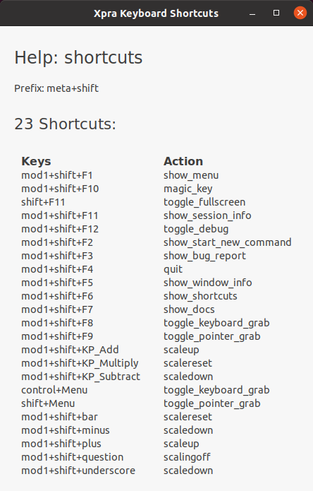

Keyboard handling is an area that is constantly seeing improvements and bug fixes. That's because each platform does things slightly differently and xpra has to somehow convert this data into meaningful keyboard events on the remote end.
Xpra utilizes keyboard shortcuts to facilitate quick access to its features.
Keyboard, then View Shortcuts.#+F6 directly to
bring up the Xpra Keyboard Shortcuts window.For historical reference, an older list of keyboard shortcuts exists in #1657.
# in Xpra Key BindingsThe # symbol represents one or more modifier keys (like
Control or Alt+Shift) in Xpra key bindings.
The exact key # stands for varies by platform and can be
overriden in configuration.
In the Xpra Keyboard Shortcuts window, the # placeholder
is named as "Prefix:":

--no-keyboard-sync option to prevent keys from repeating.
This toggle is also accessible from the system tray menu. (this switch
may cause other problems though)First, please check for existing issues that may match your problem. Failing that, make sure to read the reporting bugs guidelines, and generally you will need to include (only those that apply):
xpra toolbox-d keyboard debugging switch--no-keyboard-sync switchsetxkbmap -print and
setxkbmap -query (both directly in the client if it
supports those commands and in the xpra session) **
xmodmap -pke and xmodmap -pm (again on both)
** xkbprint -label name $DISPLAYKeymap_info.exeXPRA_DEBUG_KEYSYMS=keyname1,keyname2
on the server to log the keyboard mapping process for those keysxev output of the misbehaving key
events